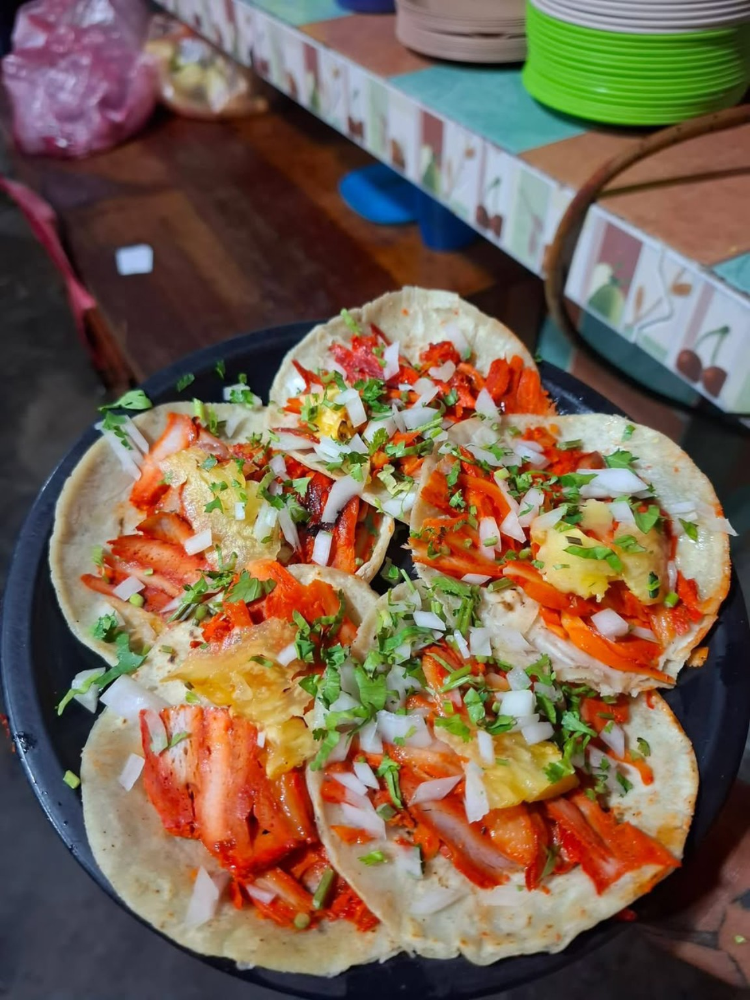

TRADICIÓN Y SABOR EN CADA BOCADO
EL SABOR QUE SIEMPRE SE ANTOJA.
Disfruta nuestros tacos al pastor, platillos especiales y ese sabor que nos distingue en Río Grande, Oaxaca.
Preparado con sabor
Pedidos a domicilio

HECHOS CON
PASIÓN
Y SABOR
DESLIZA PARA DESCUBRIR
↓
✦
DONDE EL SABOR Y LA CALIDAD NOS DISTINGUEN
✦
DESDE NUESTRA COCINA
ASÍ SE VIVE NUESTRO SABOR.
Conoce de cerca cómo preparamos nuestras especialidades, el auténtico sabor del pastor y los momentos que se viven en Tacos Orientales.
NUESTROS FAVORITOS
Ver carta rápida ↗
ANTOJOS QUE ENAMORAN.
SABOR
ORIENTAL
ORIENTAL
CONOCE NUESTRA ESENCIA
EL BUEN SABOR NOS REÚNE.
En Tacos Orientales nos encanta compartir buenos momentos alrededor de una comida llena de sabor.
Ven a visitarnos frente a las Canchas Gemelas, en Río Grande, Oaxaca, y descubre las especialidades que tenemos para ti.
Visítanos ↗
¿SE TE ANTOJARON?
¡EL SABOR VA HASTA TI!
Haz tu pedido a domicilio comunicándote con cualquiera de nuestros dos números de atención.
TU OPINIÓN NOS IMPORTA
¿TE GUSTÓ NUESTRO SABOR?
Nos encanta conocer tu experiencia. Tu opinión nos ayuda a mejorar y a que más personas descubran Tacos Orientales.
Déjanos una reseña ↗♥
¿Te encanta Tacos Orientales?
Déjanos tu apoyo con un me gusta.
—
personas nos han dado su apoyo
ENCUÉNTRANOS
Abrir Google Maps ↗
TE ESPERAMOS CON MUCHO SABOR.
Nuestra ubicación
Frente a las Canchas Gemelas, Río Grande, Oaxaca.
Pedidos y contacto
954 204 5949 / 954 203 9949